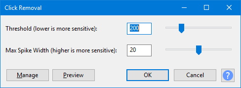

Click Removal
From Audacity Development Manual
Click Removal attempts to remove clicks on audio tracks and is especially suited to declicking recordings made from vinyl records, without damaging the rest of the audio.
For alternative click removal techniques se the tutorial Click and pop removal techniques.
- Accessed by:
- 
Select Threshold
Entering a lower value or moving the slider left will detect softer clicks. Setting this too low may cause false click detection and damage the audio. Setting it too high may leave audible clicks that you'd rather it removed.
Max Spike Width
Enter a value or move the slider to set the length of the spike that is considered to be a click. Setting this too high may cause false click detection and damage the audio. Setting it too low may leave audible clicks that you'd rather it removed.
| If Click Removal displays a message that the algorithm is not effective on the audio and nothing changed, try making a larger selection. Lowering the Threshold value or increasing the Max Spike Width may also enable Click Removal to act on the audio. |
Limitations
- Click Removal requires an audio selection of more than 4096 samples. This is about 93 milliseconds at 44100 Hz project rate as shown in Selection Toolbar.
- The Click Removal algorithm does not work on all clicks, and so may trigger the "not effective" message above even on a full selection that has some clicks.
- Very soft and rapid light ticks that sound like crackle from static electricity (often heard on recordings from vinyl records) will not be effectively removed. For this type of noise you should use the Noise Reduction effect.
- If individual brief or subtle clicks are not dealt with by Click Removal, try the Repair effect on those individual clicks. Repair can work on a selection up to 128 samples wide (about three milliseconds at 44100 Hz project rate).
- Broader clicks of 10 milliseconds or longer may not be removed. In this case there are a couple of optional Nyquist Plugins that you can install. Use PopMute to heavily attenuate loud clicks and pops to make them less obtrusive. Really loud and wide glitches that still sound too bad can be repaired by using EZ-Patch to replace the glitch with adjacent undamaged audio.
- Also see Sample workflow for LP digitization which lists some alternative click removal methods or alternative click removal software that you can use as part of your audio restoration routine.
Buttons
Clicking on the command buttons give the following results:
- gives a dropdown menu enabling you to manage presets for the tool and to see some detail about the tool. For details see Manage presets
- plays a short preview of what the audio would sound like if the effect is applied with the current settings, without making actual changes to the audio. The length of preview is determined by your setting in , the default setting is 6 seconds.
- applies the effect to the selected audio with the current effect settings and closes the dialog
- aborts the effect and leaves the audio unchanged, closing the dialog
 brings you to the appropriate page in the Manual, this page
brings you to the appropriate page in the Manual, this page